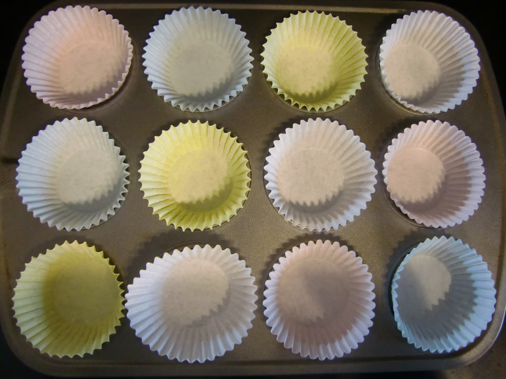
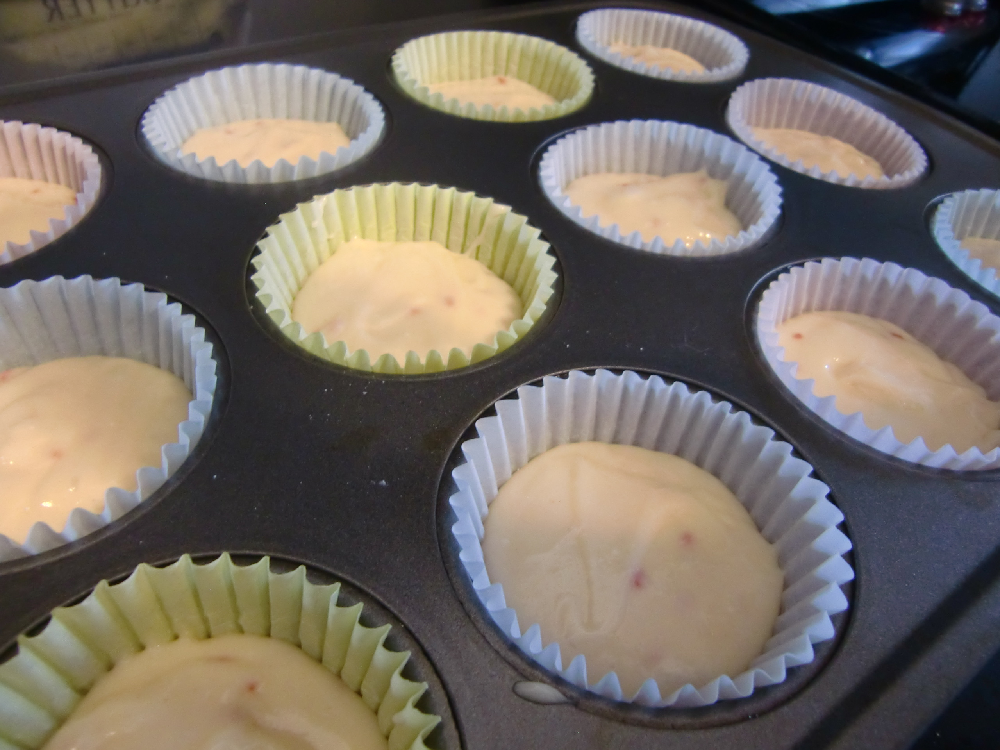
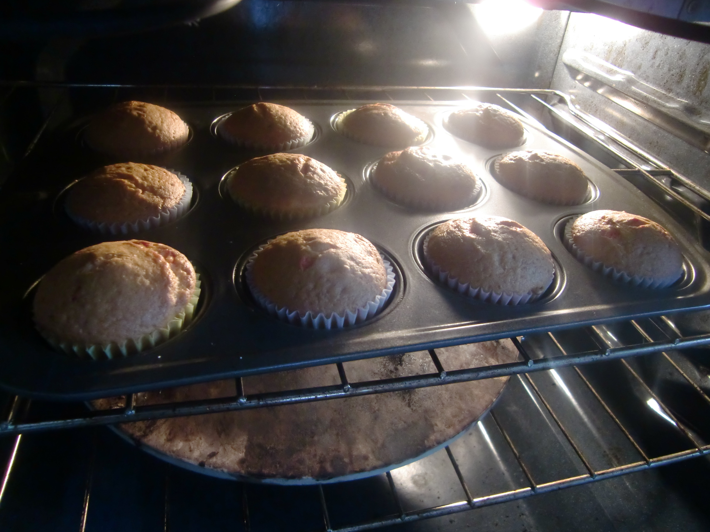
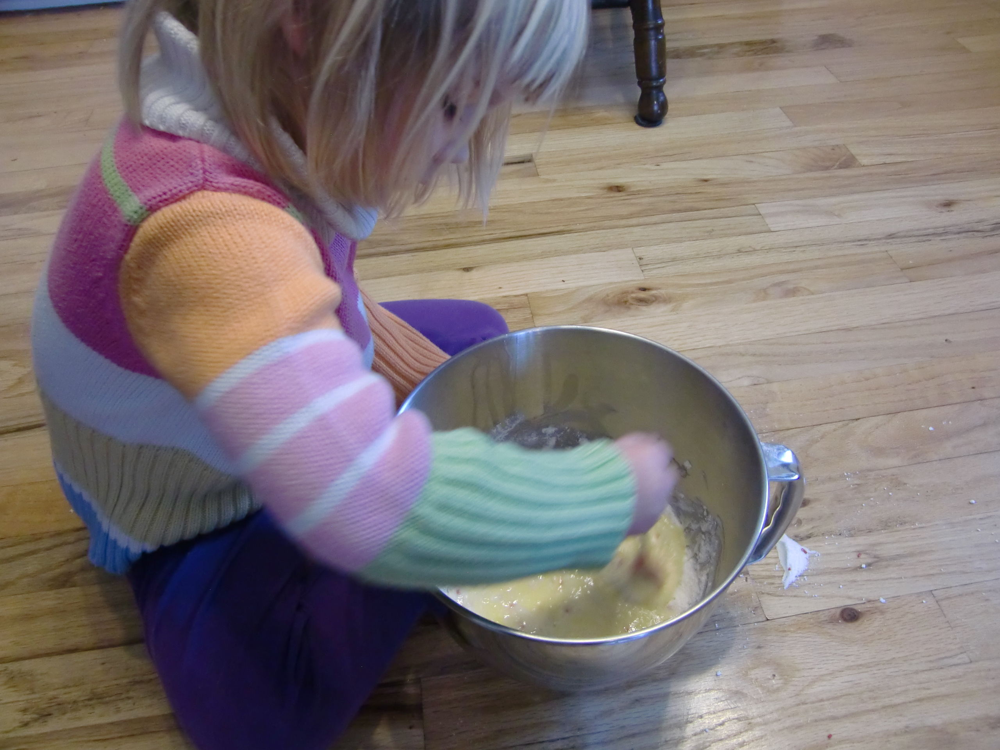
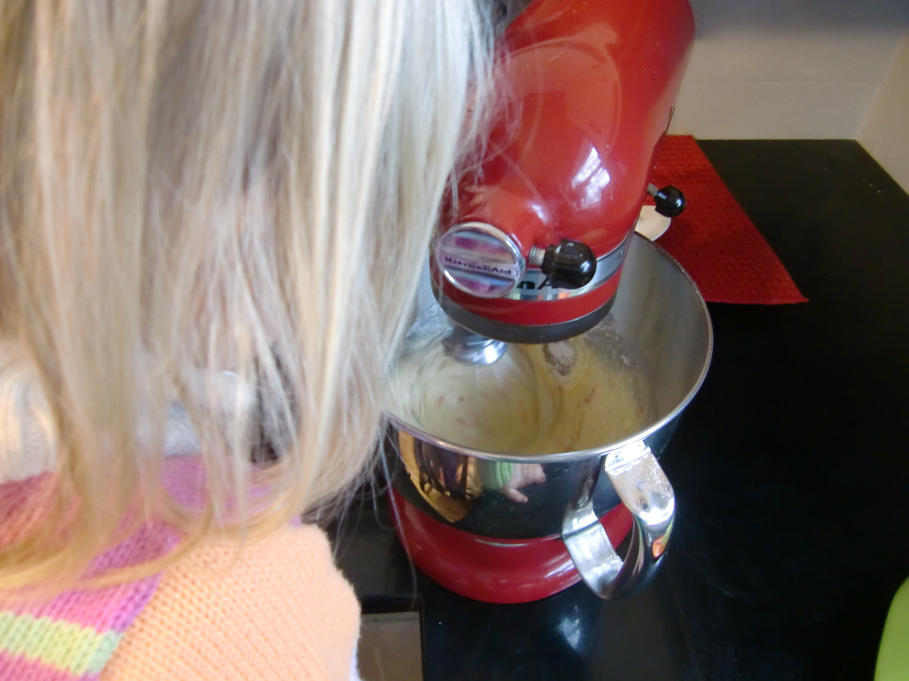
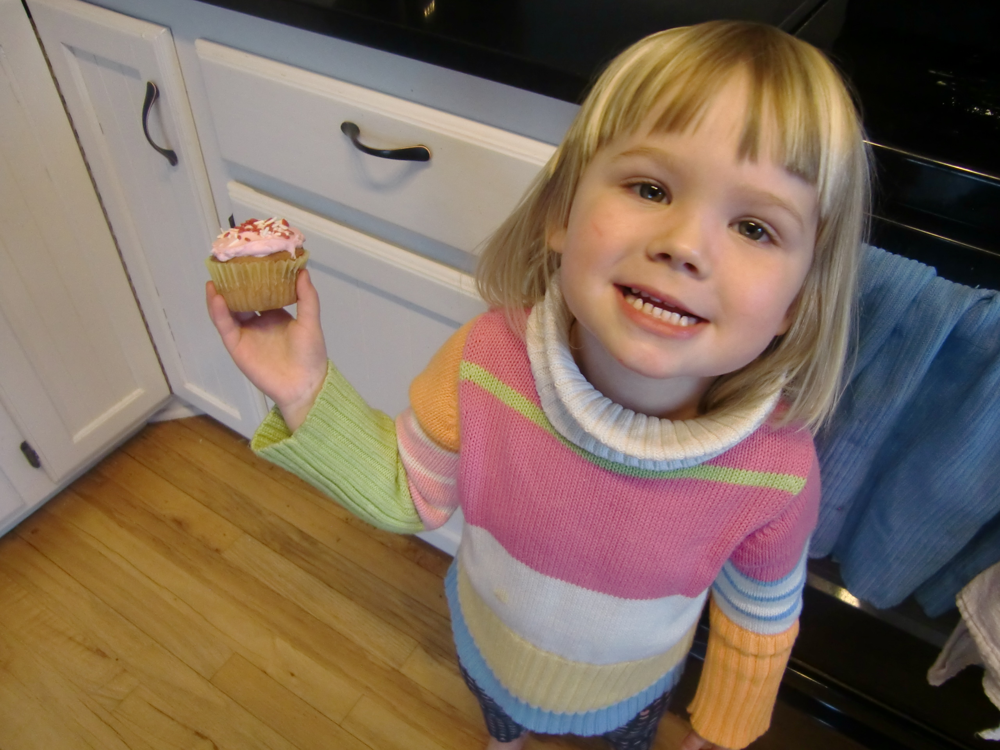

Dory's Cupcakes is the latest, greatest thing to hit the Madison food scene.
It is delivering the world pure joy, one cupcake at a time!
~ Madtown Baking Magazine ~
The frosting is enough to make you weep.
~ Lakeside Eateries ~
Sweet, delicious, and absolutely breathtaking as well! This is a place that
you simply MUST try!
~ Eastside Bakerz ~



Our Story

We come from humble beginnings baking cupcakes in our
downstairs cabin. My brother and I would torment our parents
forcing them to try new recipe after new recipe, but this
drive for perfection is what led to us opening the best bakery
on the east side of Madison.

Our success was fairly unexpected, being only a few
years of age and having absolutely no true baking experience.
However, after a few successful times selling cupcakes at a stand
outside our house, we were offered a bakery of our own, and we
turned that bakery into Dory's Cupcakes.

Our mission is to bring joy to the world one cupcake at
a time. We carefully craft every cupcake by hand and use our secret
frosting recipe to offer nothing short of a perfect treat to anyone
seeking out a delicious escape. Come try them, and see for yourself!Dory's Cupcakes 1234 Dreamer Ln Disney World, FL 47253